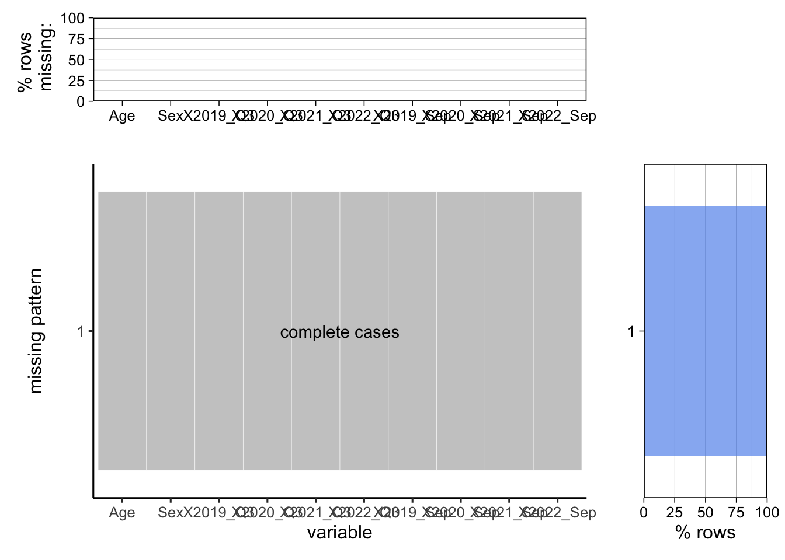

Chapter 4 Results
4.1 4.2 Unemployment Situation by State
4.1.1 Cleaning & Transforming
## State Oct 2019 ~ Sep 2020 Oct 2020 ~ Sep 2021
## 1 Alabama 6.066667 3.883333
## 2 Alaska 7.758333 6.850000
## 3 Arizona 7.291667 5.600000
## 4 Arkansas 5.658333 4.525000
## 5 California 8.975000 8.216667
## 6 Colorado 5.966667 5.883333
## 7 Connecticut 6.733333 6.958333
## 8 Delaware 7.125000 5.541667
## 9 District of Columbia 7.216667 7.091667
## 10 Florida 7.300000 5.408333
## 11 Georgia 6.041667 4.441667
## 12 Hawaii 9.800000 7.383333
## 13 Idaho 5.183333 3.858333
## 14 Illinois 8.183333 6.775000
## 15 Indiana 6.816667 4.216667
## 16 Iowa 4.708333 4.416667
## 17 Kansas 5.350000 3.683333
## 18 Kentucky 6.200000 4.783333
## 19 Louisiana 8.133333 6.216667
## 20 Maine 4.775000 4.625000
## 21 Maryland 6.108333 5.958333
## 22 Massachusetts 8.166667 6.591667
## 23 Michigan 9.233333 6.425000
## 24 Minnesota 6.008333 3.916667
## 25 Mississippi 7.650000 6.141667
## 26 Missouri 5.616667 4.716667
## 27 Montana 5.633333 3.725000
## 28 Nebraska 4.225000 2.633333
## 29 Nevada 11.908333 8.758333
## 30 New Hampshire 6.250000 3.983333
## 31 New Jersey 8.516667 6.950000
## 32 New Mexico 7.333333 7.333333
## 33 New York 8.650000 7.850000
## 34 North Carolina 6.700000 5.200000
## 35 North Dakota 4.350000 4.183333
## 36 Ohio 7.741667 5.666667
## 37 Oklahoma 5.700000 4.508333
## 38 Oregon 6.808333 5.841667
## 39 Pennsylvania 8.250000 7.033333
## 40 Rhode Island 8.425000 6.191667
## 41 South Carolina 5.350000 4.391667
## 42 South Dakota 4.150000 3.300000
## 43 Tennessee 6.883333 4.850000
## 44 Texas 6.841667 6.225000
## 45 Utah 4.433333 3.066667
## 46 Vermont 5.250000 3.641667
## 47 Virginia 5.600000 4.408333
## 48 Washington 7.775000 5.841667
## 49 West Virginia 7.816667 5.633333
## 50 Wisconsin 5.941667 4.241667
## 51 Wyoming 5.566667 4.816667
## Oct 2021 ~ Sep 2022
## 1 2.850000
## 2 5.000000
## 3 3.541667
## 4 3.266667
## 5 4.866667
## 6 3.791667
## 7 4.575000
## 8 4.591667
## 9 5.741667
## 10 3.108333
## 11 3.075000
## 12 4.158333
## 13 2.808333
## 14 4.758333
## 15 2.508333
## 16 3.200000
## 17 2.550000
## 18 4.091667
## 19 4.066667
## 20 3.591667
## 21 4.658333
## 22 4.200000
## 23 4.583333
## 24 2.416667
## 25 4.166667
## 26 3.300000
## 27 2.675000
## 28 2.116667
## 29 4.925000
## 30 2.475000
## 31 4.375000
## 32 5.266667
## 33 4.825000
## 34 3.708333
## 35 2.750000
## 36 4.150000
## 37 2.841667
## 38 3.875000
## 39 4.875000
## 40 3.591667
## 41 3.375000
## 42 2.541667
## 43 3.408333
## 44 4.441667
## 45 2.100000
## 46 2.591667
## 47 3.016667
## 48 4.108333
## 49 3.908333
## 50 3.000000
## 51 3.4833334.1.2 4.2.1. Histogram
## # A tibble: 153 × 3
## State Year mean
## <chr> <chr> <dbl>
## 1 Alabama Oct 2019 ~ Sep 2020 6.07
## 2 Alabama Oct 2020 ~ Sep 2021 3.88
## 3 Alabama Oct 2021 ~ Sep 2022 2.85
## 4 Alaska Oct 2019 ~ Sep 2020 7.76
## 5 Alaska Oct 2020 ~ Sep 2021 6.85
## 6 Alaska Oct 2021 ~ Sep 2022 5
## 7 Arizona Oct 2019 ~ Sep 2020 7.29
## 8 Arizona Oct 2020 ~ Sep 2021 5.6
## 9 Arizona Oct 2021 ~ Sep 2022 3.54
## 10 Arkansas Oct 2019 ~ Sep 2020 5.66
## # … with 143 more rows
These three histogram graphs present the distribution of average unemployment rates of each state in the U.S. from October 2019 to September 2020, from October 2020 to September 2021, and from October 2021 to September 2022. The x-axis represents the average unemployment rate (%), and the y-axis represents how many states have such an unemployment rate. From October 2019 to September 2020, each state’s unemployment rate ranged from 3% to 12.5%, and most states had more than 5% unemployment rates. There was also a state with an average unemployment rate of over 11%. From October 2020 to September 2021, the average unemployment rate of most states ranged from 3.5% to 7.5%. It is obvious that the median of each state’s unemployment rate shifted left, compared to the previous 12 months, which indicates that the unemployed situation was alleviated to some extent. As for the period of October 2021 to September 2022, the median of each state’s unemployment rate shifted left further. Most states had decreased their unemployment rate below 5%, verifying that job markets recovered after the Covid-19 pandemic.
4.1.3 4.2.2. Cleveland Plot

This Cleveland dot plot exhibits the unemployment rates of each state in the United States during three different periods of recent 36 months. The red, blue, and green dots represent the average monthly unemployment rates from October 2019 to September 2020, from October 2020 to September 2021, and from October 2021 to September 2022. The states on the y-axis are ordered by the average monthly unemployment rates between October 2019 and September 2020. Due to the missing data on Puerto Rico, this graph does not include the unemployment rate data of this state. As this graph shows, in the last 36 months, all the states had the highest unemployment rates between October 2019 and September 2020, and approximately ten states reached more than a 7.5% unemployment rate during this period. These extremely high unemployment rates resulted from the burst of the Covid-19 pandemic, which hugely impacted various industries and caused many people to lose their jobs. During this period, Nevada had the highest unemployment rate of over 12.5% among all the states, while South Dakota had the lowest, which is around 4%. However, this difficult unemployed situation was gradually alleviated in the following 24 months. For most U.S. states, the average unemployment rates for the recent 24-12 months and the recent 12 months gradually decreased from October 2020 to September 2022, except for Connecticut. The average unemployment rate in Connecticut between October 2020 and September 2021 was even higher than that between October 2019 and September 2020. Until September 2022, most states had lowered their average unemployment rate for the recent 12 months below 5%.
4.1.4 4.2.3 Map
 The above maps show the geographical distribution of average monthly unemployment rates in the U.S. from October 2019 to September 2020, from October 2020 to September 2021, and from October 2021 to September 2022. The shade of color reflects the average unemployment rates during different periods. Deeper blue represents a higher unemployment rate, while lighter blue represents a lower one. We can see the most serious unemployed situations happened from October 2019 to September 2020 from the deeper blue across the U.S. because of the burst of Covid-19. During this period, Nevada had the highest average unemployment rate of over 10% since this state is colored with the deepest blue. In the following 24 months, the unemployment rates in most states gradually dropped as the color on the map gradually becomes lighter. The average unemployment rate from October 2020 to September 2021 in each state was lower than that from October 2019 to October 2020. Also, the average unemployment rate from October 2021 to September 2022 in each state was lower than that from October 2020 to October 2021. These three maps all reveal a pattern that in a specific period, western, southern, and southeastern states suffered more severe unemployed than states in the north and middle, as western, southern, and southeastern states are colored with deeper blue on the map than other states.
The above maps show the geographical distribution of average monthly unemployment rates in the U.S. from October 2019 to September 2020, from October 2020 to September 2021, and from October 2021 to September 2022. The shade of color reflects the average unemployment rates during different periods. Deeper blue represents a higher unemployment rate, while lighter blue represents a lower one. We can see the most serious unemployed situations happened from October 2019 to September 2020 from the deeper blue across the U.S. because of the burst of Covid-19. During this period, Nevada had the highest average unemployment rate of over 10% since this state is colored with the deepest blue. In the following 24 months, the unemployment rates in most states gradually dropped as the color on the map gradually becomes lighter. The average unemployment rate from October 2020 to September 2021 in each state was lower than that from October 2019 to October 2020. Also, the average unemployment rate from October 2021 to September 2022 in each state was lower than that from October 2020 to October 2021. These three maps all reveal a pattern that in a specific period, western, southern, and southeastern states suffered more severe unemployed than states in the north and middle, as western, southern, and southeastern states are colored with deeper blue on the map than other states.
4.2 4.5 Unemployment and CPI and GDP
## Year CPI Unemployment_Population GDP Period
## 1 2012 0.4 12797 15.94 Pre-Covid
## 2 2012 0.4 12813 16.21 Pre-Covid
## 3 2012 0.8 12713 16.06 Pre-Covid
## 4 2012 0.3 12646 16.18 Pre-Covid
## 5 2012 -0.1 12660 16.22 Pre-Covid
## 6 2012 -0.1 12692 16.22 Pre-Covid
## 7 2012 -0.2 12656 16.32 Pre-Covid
## 8 2012 0.6 12471 16.27 Pre-Covid
## 9 2012 0.4 12115 16.37 Pre-Covid
## 10 2012 0.0 12124 16.33 Pre-Covid
## 11 2012 -0.5 12005 16.41 Pre-Covid
## 12 2012 -0.3 12298 16.52 Pre-Covid
## 13 2013 0.3 12471 16.68 Pre-Covid
## 14 2013 0.8 11950 16.58 Pre-Covid
## 15 2013 0.3 11689 16.63 Pre-Covid
## 16 2013 -0.1 11760 16.65 Pre-Covid
## 17 2013 0.2 11654 16.65 Pre-Covid
## 18 2013 0.2 11751 16.80 Pre-Covid
## 19 2013 0.0 11335 16.85 Pre-Covid
## 20 2013 0.1 11279 16.93 Pre-Covid
## 21 2013 0.1 11270 16.95 Pre-Covid
## 22 2013 -0.3 11136 17.05 Pre-Covid
## 23 2013 -0.2 10787 17.17 Pre-Covid
## 24 2013 0.0 10404 17.18 Pre-Covid
## 25 2014 0.4 10202 17.07 Pre-Covid
## 26 2014 0.4 10349 17.16 Pre-Covid
## 27 2014 0.6 10380 17.20 Pre-Covid
## 28 2014 0.3 9702 17.35 Pre-Covid
## 29 2014 0.3 9859 17.48 Pre-Covid
## 30 2014 0.2 9460 17.56 Pre-Covid
## 31 2014 0.0 9608 17.69 Pre-Covid
## 32 2014 -0.2 9599 17.80 Pre-Covid
## 33 2014 0.1 9262 17.74 Pre-Covid
## 34 2014 -0.3 8990 17.85 Pre-Covid
## 35 2014 -0.5 9090 17.87 Pre-Covid
## 36 2014 -0.6 8717 17.84 Pre-Covid
## 37 2015 -0.5 8885 17.93 Pre-Covid
## 38 2015 0.4 8599 18.06 Pre-Covid
## 39 2015 0.6 8515 17.99 Pre-Covid
## 40 2015 0.2 8550 18.16 Pre-Covid
## 41 2015 0.5 8834 18.18 Pre-Covid
## 42 2015 0.4 8247 18.25 Pre-Covid
## 43 2015 0.0 8167 18.28 Pre-Covid
## 44 2015 -0.1 7992 18.29 Pre-Covid
## 45 2015 -0.2 7907 18.36 Pre-Covid
## 46 2015 0.0 7922 18.35 Pre-Covid
## 47 2015 -0.2 8000 18.30 Pre-Covid
## 48 2015 -0.3 7907 18.34 Pre-Covid
## 49 2016 0.2 7627 18.40 Pre-Covid
## 50 2016 0.1 7702 18.36 Pre-Covid
## 51 2016 0.4 7961 18.52 Pre-Covid
## 52 2016 0.5 8067 18.60 Pre-Covid
## 53 2016 0.4 7652 18.58 Pre-Covid
## 54 2016 0.3 7744 18.65 Pre-Covid
## 55 2016 -0.2 7641 18.66 Pre-Covid
## 56 2016 0.1 7784 18.78 Pre-Covid
## 57 2016 0.2 7953 18.89 Pre-Covid
## 58 2016 0.1 7811 18.86 Pre-Covid
## 59 2016 -0.2 7553 18.98 Pre-Covid
## 60 2016 0.0 7521 19.06 Pre-Covid
## 61 2017 0.6 7468 19.10 Pre-Covid
## 62 2017 0.3 7379 19.14 Pre-Covid
## 63 2017 0.1 7073 19.22 Pre-Covid
## 64 2017 0.3 7089 19.20 Pre-Covid
## 65 2017 0.1 7000 19.33 Pre-Covid
## 66 2017 0.1 6873 19.44 Pre-Covid
## 67 2017 -0.1 6892 19.45 Pre-Covid
## 68 2017 0.3 7082 19.53 Pre-Covid
## 69 2017 0.5 6854 19.70 Pre-Covid
## 70 2017 -0.1 6700 19.74 Pre-Covid
## 71 2017 0.0 6774 19.91 Pre-Covid
## 72 2017 -0.1 6632 19.99 Pre-Covid
## 73 2018 0.5 6505 20.05 Pre-Covid
## 74 2018 0.5 6586 20.20 Pre-Covid
## 75 2018 0.2 6457 20.18 Pre-Covid
## 76 2018 0.4 6448 20.39 Pre-Covid
## 77 2018 0.4 6188 20.51 Pre-Covid
## 78 2018 0.2 6446 20.58 Pre-Covid
## 79 2018 0.0 6173 20.59 Pre-Covid
## 80 2018 0.1 6167 20.69 Pre-Covid
## 81 2018 0.1 6065 20.69 Pre-Covid
## 82 2018 0.2 6230 20.83 Pre-Covid
## 83 2018 -0.3 6132 20.78 Pre-Covid
## 84 2018 -0.3 6379 20.83 Pre-Covid
## 85 2019 0.2 6458 20.98 Pre-Covid
## 86 2019 0.4 6122 20.99 Pre-Covid
## 87 2019 0.6 6166 21.03 Pre-Covid
## 88 2019 0.5 5898 21.20 Pre-Covid
## 89 2019 0.2 5935 21.27 Pre-Covid
## 90 2019 0.0 5906 21.40 Pre-Covid
## 91 2019 0.2 5984 21.46 Pre-Covid
## 92 2019 0.0 5993 21.51 Pre-Covid
## 93 2019 0.1 5766 21.55 Pre-Covid
## 94 2019 0.2 5980 21.63 Pre-Covid
## 95 2019 -0.1 5930 21.71 Pre-Covid
## 96 2019 -0.1 5861 21.74 Pre-Covid
## 97 2020 0.4 5826 21.79 After-Covid
## 98 2020 0.3 5717 21.92 After-Covid
## 99 2020 -0.2 7165 20.74 After-Covid
## 100 2020 -0.7 23038 18.51 After-Covid
## 101 2020 0.0 20940 19.37 After-Covid
## 102 2020 0.5 17616 20.56 After-Covid
## 103 2020 0.5 16288 20.85 After-Covid
## 104 2020 0.3 13532 21.34 After-Covid
## 105 2020 0.1 12584 21.65 After-Covid
## 106 2020 0.0 11115 21.81 After-Covid
## 107 2020 -0.1 10777 21.59 After-Covid
## 108 2020 0.1 10789 21.71 After-Covid
## 109 2021 0.4 10180 22.22 After-Covid
## 110 2021 0.5 9992 22.03 After-Covid
## 111 2021 0.7 9691 22.69 After-Covid
## 112 2021 0.8 9719 22.82 After-Covid
## 113 2021 0.8 9251 23.08 After-Covid
## 114 2021 0.9 9502 23.23 After-Covid
## 115 2021 0.5 8671 23.32 After-Covid
## 116 2021 0.2 8339 23.59 After-Covid
## 117 2021 0.3 7666 23.74 After-Covid
## 118 2021 0.8 7375 24.21 After-Covid
## 119 2021 0.5 6802 24.31 After-Covid
## 120 2021 0.3 6319 24.52 After-Covid
## 121 2022 0.8 6513 24.52 After-Covid
## 122 2022 0.9 6270 24.73 After-Covid
## 123 2022 1.3 5952 24.97 After-Covid
## 124 2022 0.6 5941 25.00 After-Covid
## 125 2022 1.1 5950 25.23 After-Covid
## 126 2022 1.4 5912 25.52 After-Covid
## 127 2022 0.0 5670 25.48 After-Covid
## 128 2022 0.0 6014 25.87 After-Covid
## 129 2022 0.2 5753 25.81 After-Covid
## 130 2022 0.4 6059 25.99 After-Covid4.2.1 Parallel Coordinate Plot
This parallel coordinate plot exhibits the relationship between the unemployed population, GDP, and CPI from January 2012 to October 2022. Each line represents a piece of monthly data on the unemployed population, GDP, and CPI. The data before 2020 is considered as the Pre-Covid period and labeled with green, and the data after 2020 (inclusive) is considered as the After-Covid period and labeled with red. All the unemployed population, GDP, and CPI data are standardized. Both before and after Covid-19, CPI negatively corresponded to the unemployed population. In other words, a higher CPI corresponds to a lower unemployed population and vice versa. However, during the past ten years, the several high CPI and unemployed population data were all from the After-Covid period. We can infer that the Covid-19 pandemic resulted in severe inflation and job loss, significantly impacting people’s lives. Moreover, the unemployed population also negatively corresponded to GDP in both Pre-Covid and After-Covid periods. That is, a higher unemployed population corresponds to a lower GDP. In the past ten years, most GDP values after Covid-19 were still higher than before Covid-19, indicating that generally speaking, GDP in the U.S. had grown gradually in the past ten years. However, due to the enormous impact of the Covid-19 pandemic, several pieces of GDP data were lower than some Pre-Covid GDP values and connected with high unemployed population data.